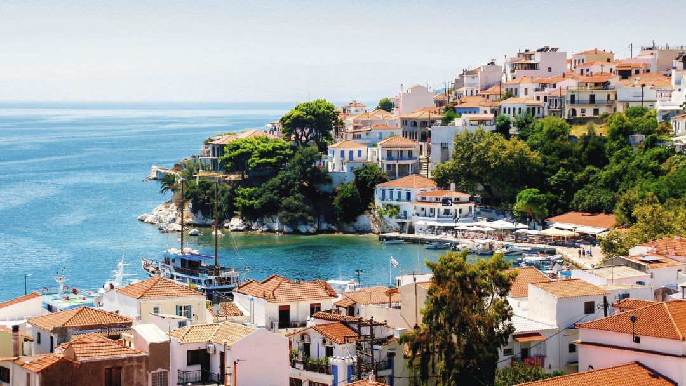

ΣΠΟΡΑΔΕΣ
Αρχική|
Σκιάθος |
Σκόπελος|
Αλόννησος |
Σκύρος|

Σκιάθος
Η Σκιάθος είναι ένα πανέμορφο καταπράσινο νησί των Βόρειων Σποράδων. Οι πευκόφυτες πλαγιές της
κατεβαίνουν μέχρι τη θάλασσα, όπου μια λουρίδα κάτασπρης άμμου, χωρίζει τα δένδρα από τη θάλασσα.
Φτάνοντας στο λιμάνι του νησιού περνάμε από τα τέσσερα νησάκια που ασφαλίζουν την είσοδο του νησιού.
Η πόλη είναι κτισμένη αμφιθεατρικά πάνω σε καταπράσινους λόφους. Τα πλακόστρωτα, τα κάτασπρα
σπίτια με τις κεραμιδένιες στέγες, οι αυλές με τις βοκαμβίλιες και τα γεράνια συνθέτουν μια γραφική εικόνα.
Στην Σκιάθο θα βρείτε τουριστικά καταστήματα, εστιατόρια, καφέ, σύγχρονα ξενοδοχεία, ξενώνες με πολλές
επιλογές για να περάσετε τις διακοπές σας.
Η Μεγάλη Άμμος, η Καναπίτσα, η Ξάνερος, ο Μεγάλος Ασέληνος,
το Μανδράκι, η Αγία Ελένη, η Μπανάνα, ο Βρωμόλιμνος, οι Αχλαδιές και οι Τζανεριές, είναι μερικές από τις
ωραιότερες παραλίες του νησιού. Οι περίφημες Κουκουναριές, που είναι από τις διασημότερες παραλίες στην
Ελλάδα και τα πεύκα ακουμπούν τα κλαδιά τους στα νερά του κλειστού κόλπου με την ολόχρυση αμμουδιά
και τα σμαραγδένια νερά. Στις υπόλοιπες παραλίες του νησιού, θα πάτε με καΐκια που ξεκινούν από το παλιό
λιμάνι όπου στη ρότα τους θα βρείτε την ευκαιρία να θαυμάσετε θαλασσινές σπηλιές και την περίφημη παραλία
Λαλάρια με τον τρύπιο βράχο και τα ολοστρόγγυλα βότσαλα.
Μην ξεχάσετε να επισκεφθείτε την Τσουγκριά,
το νησάκι με τις μαγευτικές παραλίες απέναντι από το λιμάνι της Σκιάθου.